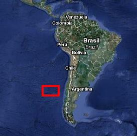

 Правительство Венесуэлы при поддержке
ряда общественных организаций Чили и Эквадора объявило о смелом
эксперименте, целью которого является заселение необитаемых островов группы
Хуан Фернандес в Тихом Океане. Участвовать в заселении острова может каждый
желающий не взирая на гражданство. Переселенцам выплачивается сумма в 50
тысяч долларов для строительства дома. А потом каждому гарантируется
стабильный доход от экспорта нефти. Что же правительство берет взамен? От
каждого переселенца потребуют подписать так называемый общественный договор,
согласно которому человек пользуется всеми благами государства, но взамен
голосует на выборах только так, как скажут по телевидению. За три недели
оргкомитет проекта получил около 100 тысяч заявок со всего мира, после чего
запись новых участников пришлось прекратить, поскольку острова небольшие.
Любопытно, что одновременно пытались провести эксперимент противоположного
характера. На один из островов в Галапагосском архипелаге приглашали
переселенцев без всякой поддержки. С собой на необитаемый остров можно было
привезти только ручную кладь. В качестве компенсации за неудобство
переселенцам разрешалась свобода слова и честные выборы с участием
проамериканских кандидатов. На выбранном острове есть проблемы с пресной
водой. Эксперимент пришлось закрыть из за отсутствия желающих. Были поданы
всего две заявки из Бутана и Молдавии.
Российский политик В.Жириновский сказал, что результаты обоих экспериментов
высветили истинную ценность демократии.
Сенатор-республиканец Джон Мак-Кейн назвал эксперимент провокацией. "Теперь
на карте возникнет Архипелаг Гулаг" - заявил он.
И теперь анонимный опрос. Что бы выбрали вы?
Я выбираю
результаты
этого опроса
Назад|На главную